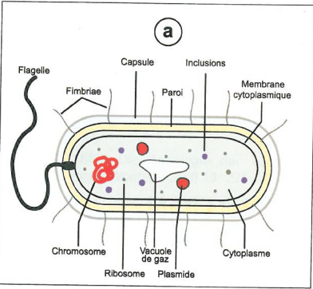
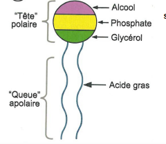
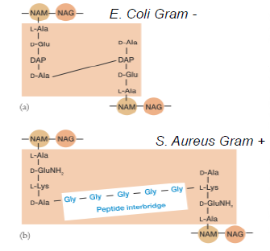
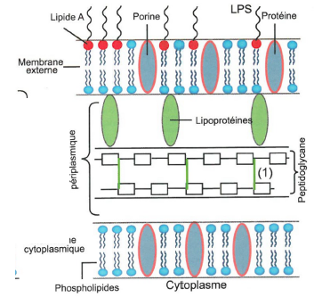
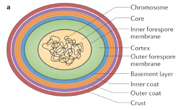

La cellule procaryote
Une cellule procaryote n'a pas de noyau, pas d'organites, pas de compartiments intracellulaire. Ce sont des cellules haploïdes. Les cellules procaryotes sont les archées et les bactéries.

Les bactéries
La morphologie
Les bactéries sont des micro organismes. Les bactéries ont une forme de coque sphérique avec un diamètre de 1 à 2 µm. Certaines bactéries ont une forme de bacille de 2 à 10 µm de long. La forme des bactéries peut être très diverse.
Structure de la membrane
Toute cellule procaryote est délimitée par une membrane. Cette membrane fait 7 à 8 nm d'épaisseur. La membrane sert de barrière sélective, membrane qui va contrôler le transport de nutriments vers la cellule. Elle permet aussi l'ancrage protéine membranaire. On a une différence de potentiel entre l'extérieur et l'intérieur, elle est donc polarisée cela va lui permettre d'acquérir de l'énergie. Le mésosome, est une invagination interne de la membrane plasmique. Nous ne connaissons pas encore son rôle.
La bactérie se divise par fission binaire
Les bactéries obtiennent leur énergie par la lumière, ce sont des bactéries phototrophes
Elles peuvent être aussi des bactéries chimiotrophes
La membrane cytoplasmique
La membrane possède une bi couche, une partie hydrophobe et une partie hydrophile constitués de phospholipides qui possède une tête polaire et une queue apolaire constitué d'acide gras. Le D-glycérol, partie de la tête est reliée à deux chaînes d'acide gras par une liaison ester

La chaîne d'acide gras est constituée de 12 à 18 carbones. Il n'y a pas de stérols, vitaux pour le fonctionnement cellulaire et précurseur de vitamines et d'hormones stéroïdiennes liposolubles, mais une présence d'hopanoïdes, composé organique penta cyclique jouant un rôle similaire aux stérols. Les hopanoïdes ainsi que la composition des acides gras nous permettent de faire la taxonomie.
Les bactéries qui vont être à basse température et à haute température, on aura une modification des acides gras pour éviter qu'ils se figent ou qu'ils fondent.
Chez les bactéries psychrophiles, bactéries à basse température, on a une augmentation des acides gras insaturés qui permet le maintien d'une semi - fluidité à basse température. Inversement pour les bactéries thermophiles, on aura une diminution des acides gras insaturés.
Granules de réserves
Les granules sont en polyphosphate, polymère d'orthophosphate liés par liaison ester. Elles ont un rôle de stockage de phosphate. Une cellule a besoin d'une grande quantité de phosphore. Les granules de réserves stockent aussi du souffre. Ils sont utilisés comme source d'énergie alternative quand la principale source d'H2S est épuisée. Le souffre va être oxydé en sulfate. La bactérie à la capacité de stocker le glucose en glycogène qui est une source de carbone pour la bactérie, ainsi que de l'azote, granulation cyanophycine, polypeptides riches en acide aspartique et en arginine.
Vacuole à gaz
Les vacuoles à gaz assurent la flottabilité, mobilité verticale en réponse aux facteurs environnementaux. Les vacuoles sont imperméables à l'eau et aux solutés mais pas au gaz. Ils permettent aux phototrophes de se positionner dans la colonne d'eau en fonction de l'intensité lumineuse. Les vacuoles sont constitués d'une fine couche protéique.
Le matériel génétique bactérien
L'ADN peut être condensé en boucle mais ce dernier n'est pas compacté contrairement aux eucaryotes. Certaines bactéries ont des plasmides, molécule bicaténaire circulaire impliquées dans le transfert de gènes verticales entre bactéries car il n'y a pas de reproduction.
Les plasmides portent des gènes qui permettent aux micro organismes de s'adapter à leur environnement :
- résistance aux antibiotiques
- plasmide de virulence
- résistance aux métaux lourds, pesticides, xénobiotiques
- catabolisme de molécules complexes
- plasmides cryptiques (sans fonction connu)
Quand une bactérie à un plasmide, si elle le réplique c'est qu'il y a un avantage pour elle car ça coûte beaucoup d'énergie.
La paroi des cellules
La paroi sert à :
- la protection contre les chocs osmotiques
- confère la forme des micro organismes (25 à 35% du poids total)
- spécificité antigénique de la bactérie
- support de l'action d'enzymes exogènes (lysozyme) ou antibiotiques
On distingue la nature de la paroi à l'aide de la coloration de Gram.
Les bactéries à Gram positif ont une paroi épaisse. Jusqu'à 40% du poids sec de la bactérie, le taux de peptidoglycane est très important dans la cellule.

Les acides teichoïques sont des polymères de glycérol phosphate comprenant des résidus glucose et galactose et de la D-alanine. Les acides sont connectés au peptido glycane directement ou aux lipides de la membrane plasmique : acides lipotéichoiques donnent à la paroi leur charge négative. Les différents feuillets compose le peptidoglycane. Ce dernier est hétéropolysaccharide. Feuillets de peptidoglycane reposant les uns sur les autres. Le peptidoglycane est constitué de chaîne de Nam et Nag. Le groupe carboxyle du Nam sont des chaînes latérales de tétrapeptides constituées de 4 acides animés en alternance. Le pontage (liaison) est très important chez les bactéries à Gram positif.
Les acides teichoïques sont absents chez les Gram- où le pontage est direct.
Feuillet : succession de chaîne ou il y a des tétrapeptides où on aura des associations entre ces chaînes.

Les bactéries à Gram négatif ont une épaisseur plus faible. Il y a un décollement de la membrane cytoplasmique avec au dessus un peptidoglycane très fin de 2 ou 3 feuillets. Cependant la bactérie à Gram négatif possède une deuxième membrane. Présence d'un espace périplasmique entre la membrane cytoplasmique et la paroi externe. Sur la partie extérieur de la paroi externe, on a des sucres qui varient en fonction des bactéries.

Les mycoplasmes
Les mycoplasmes proviennent de la classe des mollicutes. Ces bactéries sont pléomorphes car elles n'ont pas de paroi. Elles ne savent pas synthétiser les précurseurs de peptidoglycane. Parasites des cellules humaines ou végétales. Elles sont sensibles aux chocs osmotiques mais pas à la pénicilline.
Les mycobactéries ont une paroi très particulière. Il y a la présence d'acide mycolique et de lipides externes. Les acides mycoliques sont de longues chaînes et de courtes chaînes d'acide gras, elle fait une membrane externe très imperméable, ces bactéries ont donc une croissance très lente.
Chez les bactéries on peut avoir des capsules, polymères synthétisés par les bactéries. Elles piègent les éléments nutritifs. Elles adhèrent aux cellules des tissus de l'hôte. Elles protègent contre les macrophages et contre les agents antimicrobiens. Ce sont des exopolysaccharides bactériens.
Il existe aussi des slime layer : structure lâche et diffuse, couche visqueuse. Va permettre à la cellule de se déplacer par glissement.
Les biofilms sont composés de polysaccharides et d'ADN. Ils peuvent être en forme de tapis microbien, sur une roche ou dans une canalisation ou des objets dans l'eau.
La mobilité
Les bactéries peuvent se développer de multiples façon :
-
par le swarming : de manière collective comme un essaim d'abeille. Elles se divisent par période et vont se déplacer toutes en même temps. En avançant elle vont synthétiser un biosurfactant qui va diminuer la tension en surface pour le déplacement.
-
par la nage : présence de flagelle, on identifie la bactérie à l'aide de la flagelline sur le flagelle. Différents mode de répartition sur la cellule. Le flagelle est constitué d'un filament flagellaire relié par un stator et le rotor qui va tourner qui va permettre de faire tourner le flagelle
-
par rétraction : spiderman, retient plusieurs pilis, quand elle lâche un pili elle se déplace dans la direction d'un autre.
-
par glissement : membrane externe qui va sécréter des polysaccharides qui vont permettre de glisser sur la surface ou char d'assaut -> déplacement des protéines (adhésines) au niveau de la membrane externe. Les adhésines sont reliés par des structures qui bougent.
Les bactéries se déplacent en réponse à un tactisme, signal environnemental par :
- chimiotactisme
- magnétotactisme
- phototactisme, aérotasctisme, osmotactisme
- tactisme positif ou négatif
Les pilis sont des appendices protéiques qui sont fréquent chez les Gram négatif. Ils sont beaucoup plus court que les flagelles. Ils ont un rôle d'adhésion.
Formes de résistance chez les micro organismes
L'endospore bactérienne
Certaines genres de bactéries à Gram positif peuvent se différencier en un structure inerte au niveau métabolique.
Structure d'une spore du centre vers la périphérie :
-
core/noyau où on retrouve le chromosome : milieu très déshydraté, consistance d'un gel.
-
membrane interne qui ne laisse rien passer : lipides immobiles, faible perméabilité, protège l'ADN du core (agents chimiques). Fin peptidoglycane entourant la membrane interne qui devient la paroi lors de la germination. Possède des protéines SASPs qui entourent l'ADN et le protège, et sont source de carbone et d'énergie.
-
cortex, peptidoglycane modifié
-
membrane externe perméable : ne joue pas le rôle d'une barrière imperméable contrairement à la membrane interne
-
les tuniques sporales
-
(exosporium) : couche para cristalline de protéines, entourée par une bordure en brosse formée de filaments externes. Il a un rôle de protection. Elle a un espace important avec les tuniques sporales. Elle est facultative.

Autres formes de résistance chez les micro organismes
Les akinètes des cyanobactéries
Les akinètes des cyanobactéries sont des cellules aux parois épaisses formées en réponse à une carence du milieu, obscurité, dessication ou froid par certains genres de cyanobactéries.
Les archées
La membrane cytoplasmique
La membrane est constitué de chaînes hydro carbonées ramifiées de 40 carbone. Les membranes sont constituées d'éthers d'isopranyl-L-glycérol. Contrairement aux bactéries, elles possèdent des liaisons ethers, liaison plus stables.
Chez les archées ont a deux types de membranes,
- structure monocouche
- structure bicouche
La membrane des archées est moins perméable aux ions mais permet une meilleure adaptation au stress énergétique. La membrane atypique des archées leur permet de mieux résister aux conditions extrêmes.

La paroi
Les parois sont différentes de celles des bactéries. La diversité est importante dans la structure des parois. Elles sont résistantes aux antibiotiques et aux enzymes lytiques. C'est un système qui peut être composées de 5 différentes éléments présentes ou non.
- pseudomuréines : paroi épaisse de 15 nm, elle ressemble au peptidoglycane.
- polysaccharides (méthanochondroïtine) : polymère analogue au sulfate de chondroïtine retrouvé dans les tissus animaux, la molécule est non sulfatée
- glycoprotéines : protéines glycosilé chargés négativement afin d'intéragir avec les ions Na de leur environnement
- les couches S : réseau para cristallin de glycoprotéines ou exclusivement formée de protéines
- gaines protéiques : enveloppe externe constitue un fourreau tubulaire composé essentiellement de protéines et de composés glucidique